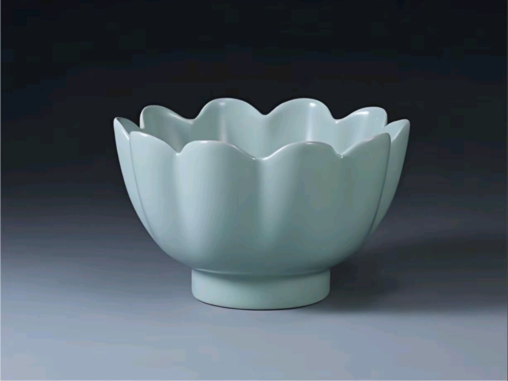
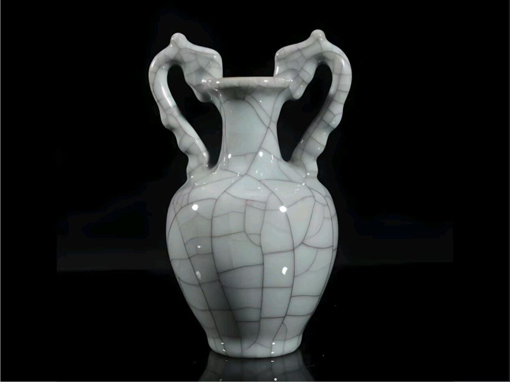
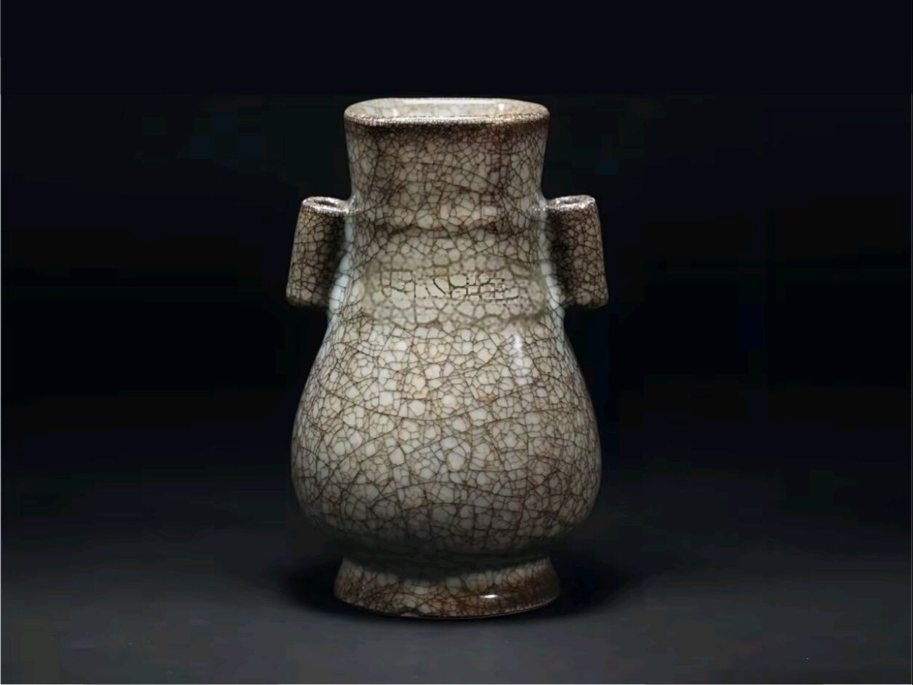
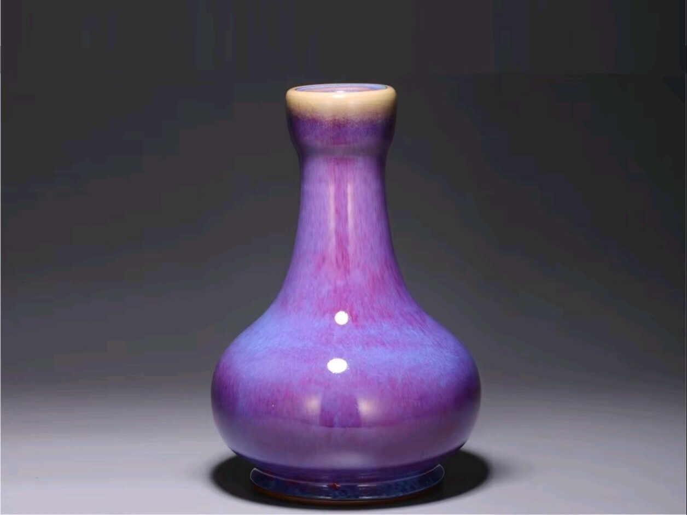
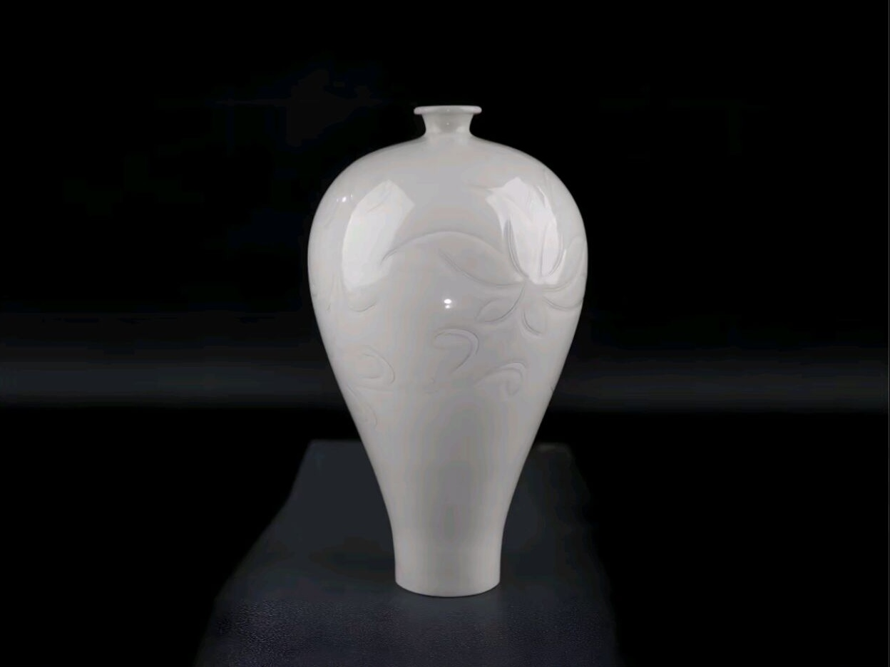
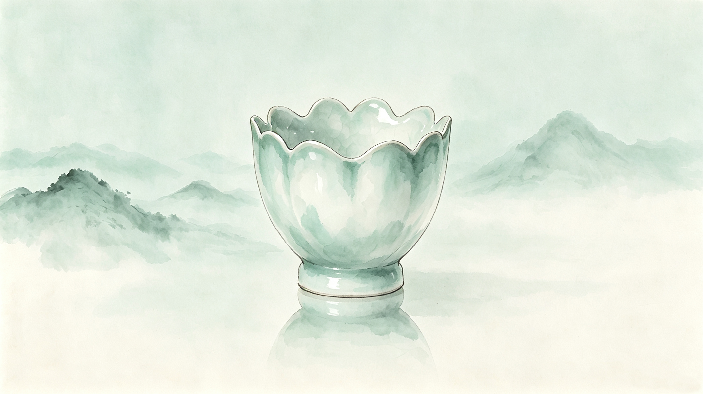
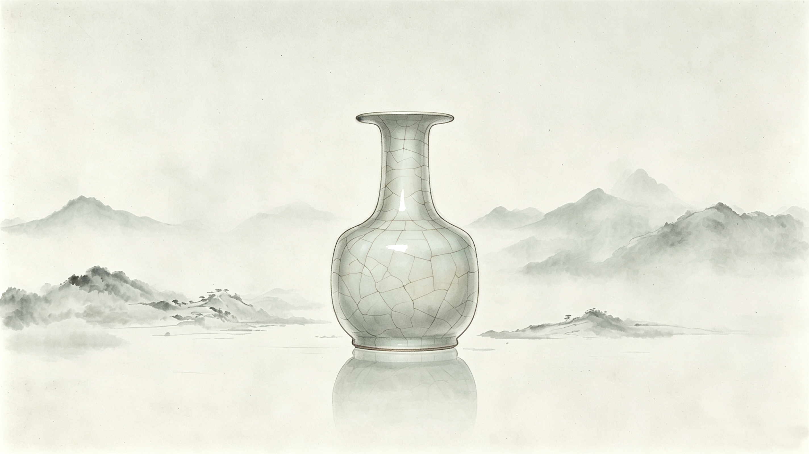
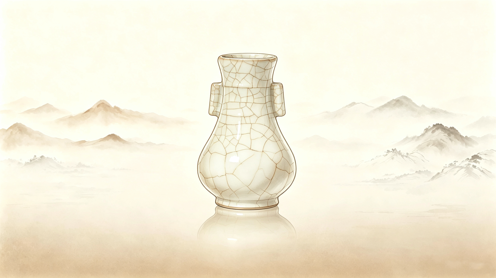
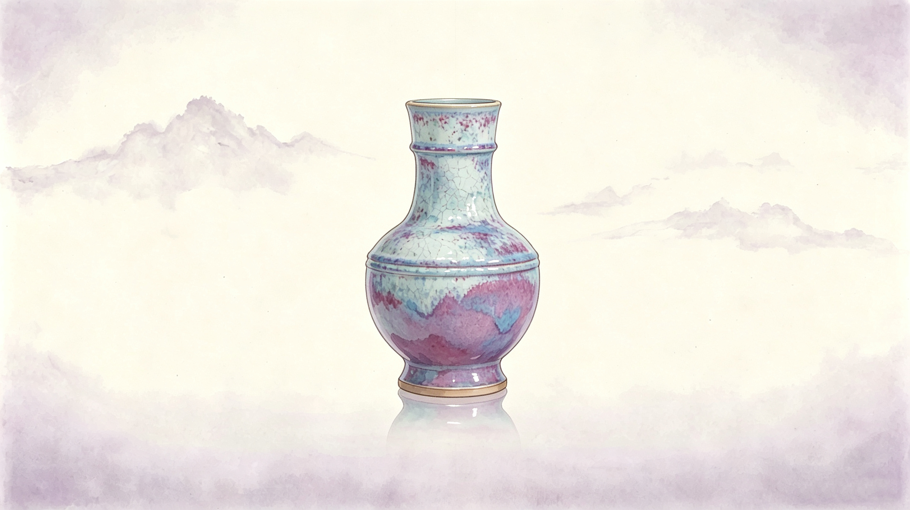
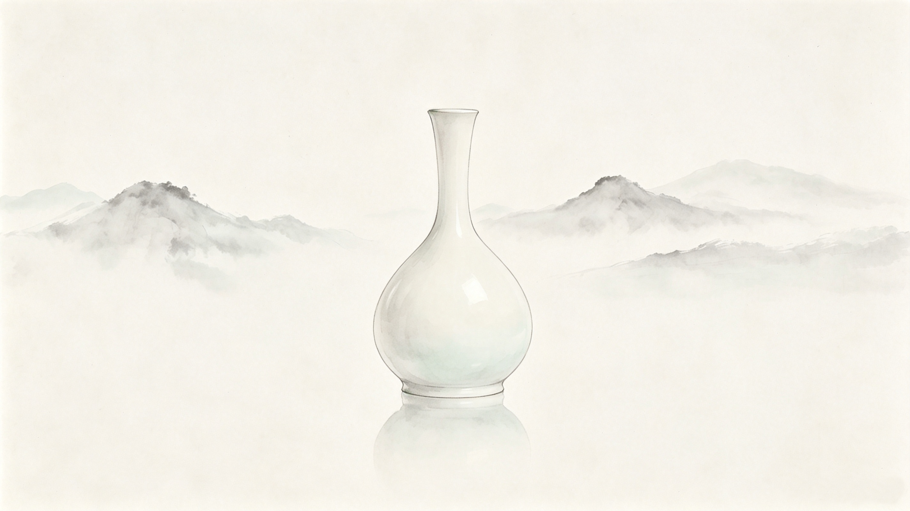

雨过天青云破处，这般颜色做将来，汝窑为宋代五大名窑之首，御用珍品传世稀少。

宋代宫廷官窑，釉色粉青莹润，器型端庄典雅，尽显皇家风范。

开片纹为特色，金丝铁线自然天成，是宋代瓷器工艺的艺术瑰宝。

入窑一色，出窑万彩，钧窑窑变釉色堪称宋代瓷器的色彩奇迹。

以白釉印花工艺闻名，釉色温润如玉，纹饰精美繁复。

雨过天青 温润如玉

金声玉色 简约大方

金丝铁线 攒珠聚球

入窑一色 出窑万彩

细腻纹饰 宛若霜雪